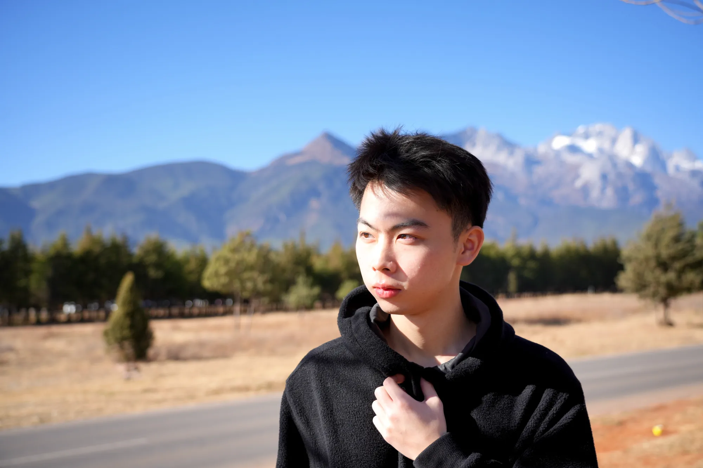
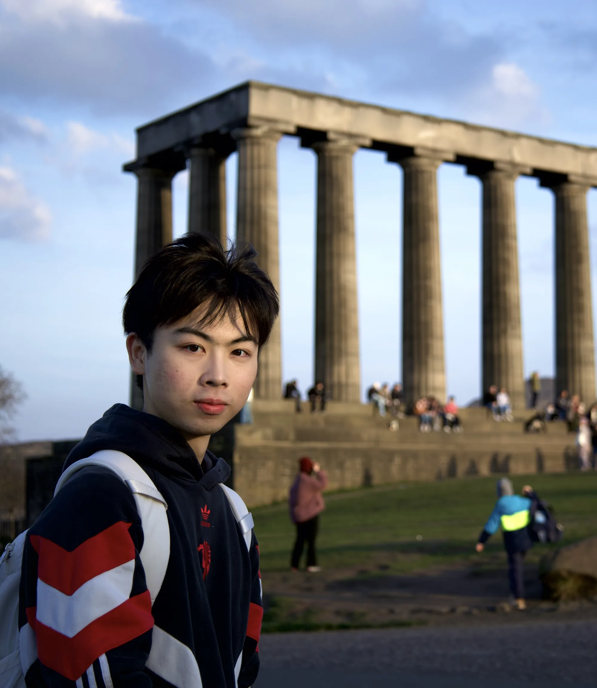
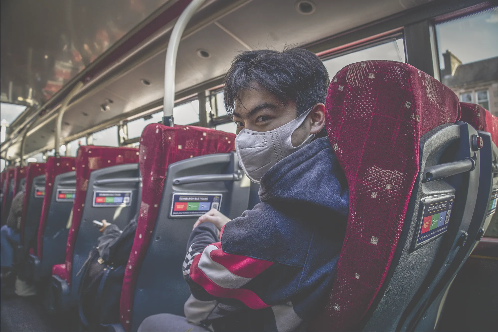
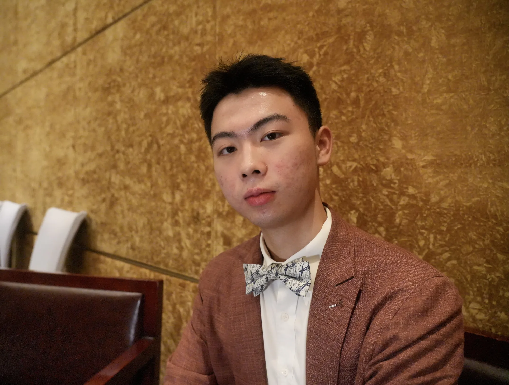

Photography, for me, is an extension of design thinking — a way of reading space, light, and human presence before putting pen to paper. These images were made across four continents and a dozen cities, but they all begin in the same place: a moment of stillness inside a moving world.
三个系列，六十四帧。从成都的巷子到苏格兰的高地，从东京的霓虹到岳阳的老宅。这些照片记录的不是风景，而是我在其中的凝视与感受。




Urban Intersections
Cities have always been my lens for understanding how culture takes physical form. This series was made across Chengdu, Tokyo, Osaka, Edinburgh, Baltimore, and Wakayama — each frame a fragment of what I found most irreducibly local about each place. The way a staircase turns in a Kyoto alley. The specific weight of Edinburgh's grey stone in morning mist. The colour of a Chengdu street-food cart at dusk. I am not interested in the postcard. I am interested in the moment just before someone notices the camera — when a city is still being itself.
01 / 03Wilderness Made
These photographs were made on foot — in the Scottish Highlands, along the Izu Peninsula, and on the slopes of Jade Dragon Snow Mountain. What drew me to each place was not scenery in the conventional sense, but the feeling of being in terrain that preceded human language entirely. The light on Glencoe at five in the morning. The particular silence of snow at 3,000 metres. The way Izu's coastline looks like it is still deciding what shape to be. Each image here is also an emotional self-portrait: I was not a neutral observer. The weather I photographed was, in some measure, the weather inside me.
02 / 03Echoes of Home
These photographs were made in Yueyang County, Hunan — the place I come from. They are portraits of old farmhouses, wooden tools, cracked courtyards, and objects that no longer have clear names in the mouths of my generation. I began making them because I wanted to understand how my grandparents lived: what they held, what they built, what they considered worth keeping. But I also made them out of a kind of grief. China's transformation in the last forty years has been so rapid that these things did not simply age — they were made obsolete almost overnight. This series is both an act of attention and an act of mourning.
03 / 03